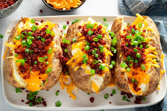

Ultimate Twice Baked Potato

Crispy Skinned Twice Baked Potato With A Fluffy, Pillowy Interior
What better way to amp up the standard steak house side? By stuffing them full of cheese, sour cream and bacon of course!
hese spuds, filled to the brim with your favorite potato toppings, can almost be a meal on their own, just like our bbq chicken twice-baked potatoes or taco stuffed sweet potatoes.
Ingredients (4 servings):
- 4 large russet potatoes
- 1/4 cup butter
- 1/4 cup sour cream
- 1/4 cup freshly chopped chives
- 2 green onions, thinly sliced, white and green parts divided
- 3/4 cup shredded Cheddar
- 6 slices crispy bacon, crumbled
- Kosher salt
- Freshly ground black pepper
Cooking Steps
- Preheat oven to 400°. Prick potatoes all over with a fork or sharp knife and wrap tightly in foil. Bake until soft, about 1 hour.
- Unwrap potatoes and cut lengthwise slits in the top of each. Carefully scoop out flesh from center of each potato into a medium bowl, then add butter, sour cream, chives, green onion whites, half the cheddar, and half the bacon. Season with salt and pepper.
- Spoon filling back into each potato, mounding it on top. Sprinkle with remaining cheese and return to oven until melted, about 5 minutes. Top with scallion greens and remaining bacon.